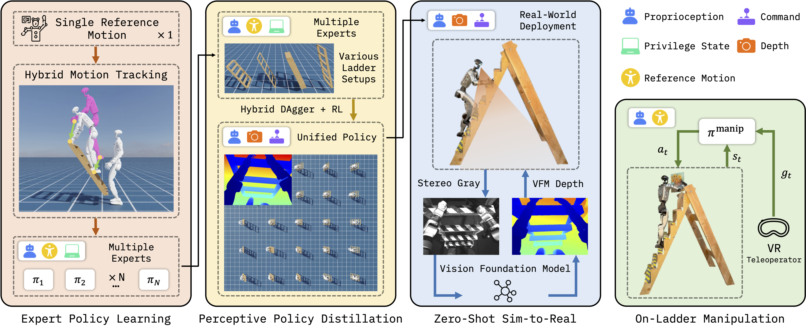
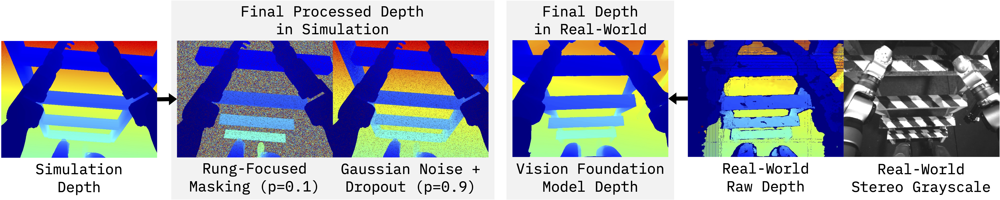

Humanoid robots hold great promise for operating in human-centered environments, yet ladder climbing remains one of the most challenging tasks due to sparse footholds and handholds, complex whole-body coordination, and sensitivity to perception and control errors. We present LadderMan, a unified system that enables humanoid robots to robustly climb diverse ladders and perform manipulation under such constrained conditions. Our climbing policy is built on a scalable two-stage learning pipeline, where we use hybrid motion tracking to learn multiple climbing experts from a single reference motion, and distill these experts into a unified depth-based visuomotor climbing policy via hybrid imitation and reinforcement learning. To enable real-world deployment, we leverage vision foundation models to bridge the sim-to-real gap in depth perception. Building on the learned climbing policy, we further train a separate manipulation policy using a dual-agent formulation, allowing stable on-ladder manipulation via teleoperation. Experiments demonstrate that LadderMan achieves robust ladder climbing across a wide range of geometries, successfully transfers to real-world hardware in a zero-shot manner, and supports various manipulation tasks under challenging ladder constraints.

Adjust a Wall Painting
Hand Off a Box from a High Shelf
Tighten a Light Bulb
Consecutive Bidirectional Climbing
A major challenge in deploying perceptive humanoid policies is the sim-to-real gap in depth observations. LadderMan bridges the visual gap between simulation and real world by applying rung-focused masking, vision foundation model, and minimalist noise augmentation.

Raw Depth
VFM Depth
We evaluate the learned climbing policy across ladders with varying rung spacing z and inclination angle φ in simulation. We compare LadderMan against a blind motion tracking baseline trained without perception.